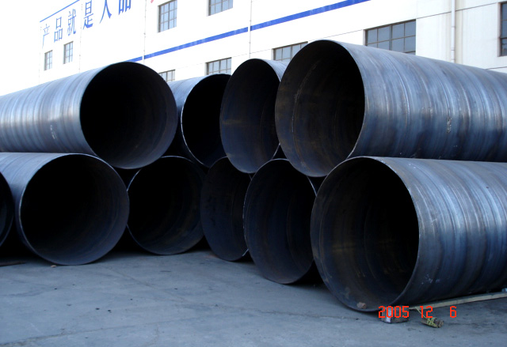

供应螺旋钢管家面临的问题是有效需求不足

特别是在以后需求放缓的背景下，钢铁行业的供需矛盾进一步缩小，数据显示，近年国际粗钢产量继续增长，而实践上表观消费量曾经开端显示出峰值的迹象。
关于钢铁行业，以后消费的一个亮点或许是出口，海关的统计数据显示，往年1-3月份钢材出口同比增长四成。供应螺旋钢管，为此，市场也寄希望于一带一路战略施行能带来下游需求添加，但业界并不以为将来几年行业能随便摆脱产能过剩的困扰。
上世纪80年代以来，中国外贸施行的大进大出战略培养了中国世界工厂的位置。但是，明天的国际市场正在发作深入变化，过来大进大出的老路曾经难以为继。4月3日，李克强总理在掌管召开中国配备走出去和推进国际产能协作座谈会时强调，要推进大邱庄矩管消费厂家从大进大出转向优进优出，构成开放型经济新格式供应螺旋钢管那么，在钢铁行业，钢材作为配备制造业的次要根底资料，其质量的优劣和价钱的上下会直接影响到所消费的配备的质量、功能和价钱程度，中国钢材对外贸易也需求从大进大出转向优进优出。
地址：河北沧州螺旋钢管生产基地
手机：186-3170-5801 == QQ791117